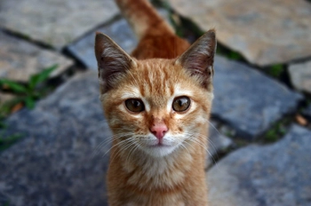

CATS-R-US.NG
CATS-R-US.NGAbout Our CEO
The Compassion and Vision of Cats-R-Us CEO
In the heart of Nigeria, a remarkable individual is leading a charge to redefine the way we perceive and care for our feline companions. Meet Favour Justin, the passionate CEO of Cats-R-Us, a leading organization dedicated to the welfare of cats.
Favour's journey began with a simple yet profound realization – the plight of cats in Nigeria was largely overlooked. Fueled by an unwavering love for these creatures, she set out to change not only their circumstances but also the prevailing attitudes toward them.
"Cats are extraordinary beings, each with a unique personality and charm," Favour states with conviction. "Yet, in our society, they often face neglect and misunderstanding. It's time to rewrite their narrative."
Under Favour's leadership, Cats-R-Us has pioneered initiatives to rescue, rehabilitate, and find loving homes for countless cats across the country. The organization's impact goes beyond immediate rescue efforts; it extends to education and awareness programs aimed at fostering a culture of empathy and responsible pet ownership.
"Our goal is not only to provide shelter and care but also to change perceptions. Cats are not just pets; they are family members deserving of love and respect," she emphasizes.
Through innovative campaigns and partnerships with local communities, Cats-R-Us has successfully challenged stereotypes and created a ripple effect of positive change. Favour's vision extends to the establishment of a state-of-the-art feline sanctuary, a haven where cats can thrive and receive the care they deserve.
"I envision a Nigeria where cats are revered, where every cat is valued for the unique joy and companionship it brings to our lives," Favour shares. "Together, we can create a future where no cat is left behind."
As we reflect on Favour Justin's unwavering commitment to the welfare of cats, it's clear that her passion is not just a personal endeavor but a movement to reshape the destiny of feline friends in Nigeria. Through Cats-R-Us, she is sowing the seeds of compassion, leaving an indelible mark on the landscape of animal welfare in the region.
"In the eyes of every rescued cat, I see a story of hope. And in changing their stories, we are changing the world for the better," Favour concludes.
Compelling cat stories and facts

10 fun facts you didnt know about cats

"Purr-fect Parenting: Unleashing Tips & Tricks for Happy Cat Pawrenting! 🐾
Paws and Reflect: Cat-ch the Clean Habit of Litter Training!